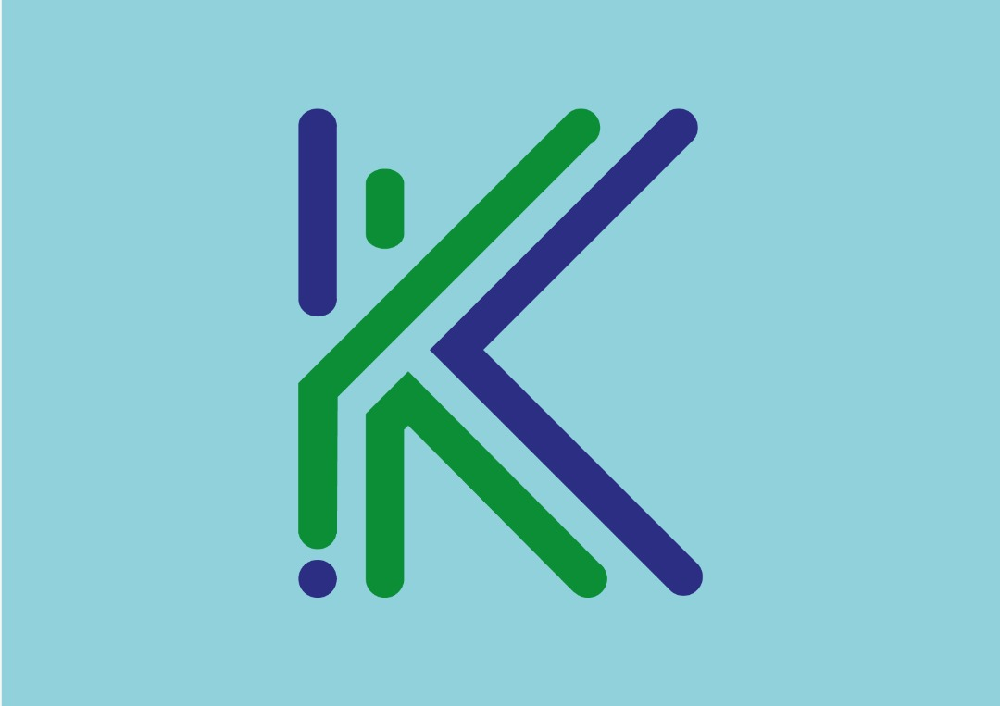

<ion-content>

  <div class="padding" style="background-image: url(../../assets/img/benz.jpg);background-size: cover;">

    <div class="logo">
     
    </div>

    <div class="flex" style="padding-top: 20em;">
      <ion-button expand="block" color="light" [routerLink]="['/register']">
        Inscription
      </ion-button>
      <ion-button expand="block" fill="outline" color="light" [routerLink]="['/login']">
        Connexion
      </ion-button>
    </div>

  </div>
</ion-content>
